Validation of Tree Standing Carbon Mass for Maliau-2
This page describes validation of Virtual Ecosystem standing stem and foliage carbon mass against SAFE old-growth plots in the Maliau-2 grid. It covers observed-data processing, model outputs, spatial and temporal matching, and comparisons across the 2011 and 2014 censuses. Figures also summarise modelled changes over time and PFT-specific cell trajectories.
Observed Data
The SAFE tree census is filtered to old-growth plots within the Maliau-2 grid. Stem and foliage carbon mass are estimated from DBH using the allometric equations of Kenzo et al. (2009), with tissue-specific carbon fractions applied. Tree estimates are summed within plots and standardised to kg C ha-1.
Complete census data are available for 2011 and 2014. Reported standard errors represent allometric parameter uncertainty only.
Spatial and Temporal Matching
The map shows the old-growth plots and all 100 cells in the Maliau-2 grid. Plot footprints are reconstructed as squares from their recorded areas (25 m x 25 m).
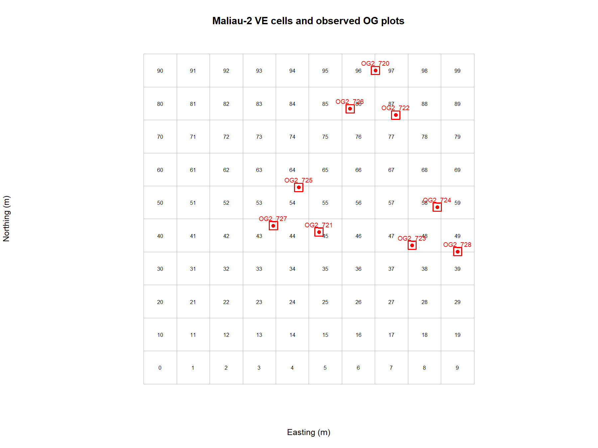
Each comparison row pairs one plot, one overlapping VE cell, and one census date. A plot may overlap multiple cells, so its observed value is repeated and those comparison rows are not independent. Each census date is matched to the model timestep interval that contains it.
Predicted Outputs
The processing script calculates total and PFT-specific stem and foliage carbon mass for each cell and timestep, standardises the values to kg C ha-1, and writes the full-grid output. The figures below show model dynamics before comparison with observations.
Mean Carbon Mass Across Cells
Each figure shows the mean mass per cell at each timestep. Values are in kg C ha-1.
Mean Stem Mass - all timesteps
Mean stem mass drops sharply during the initial timesteps.
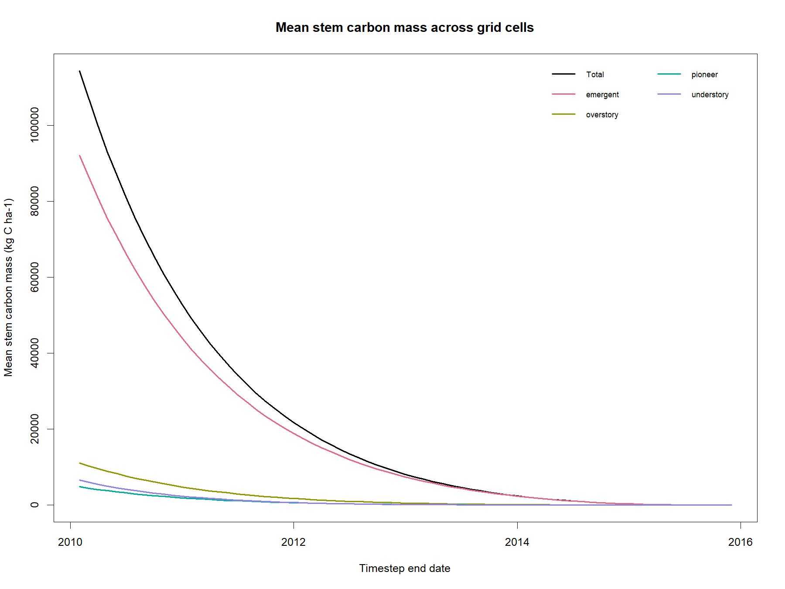
Mean Foliage Mass - all timesteps
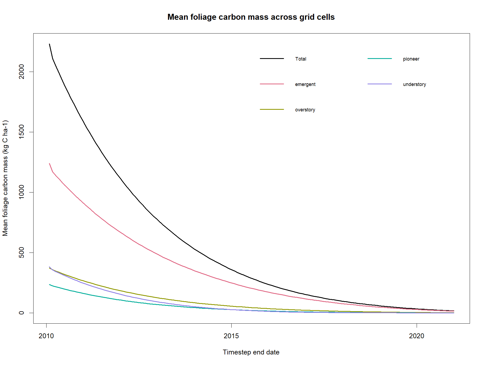
Mean Stem Mass - from timestep index 4 onwards
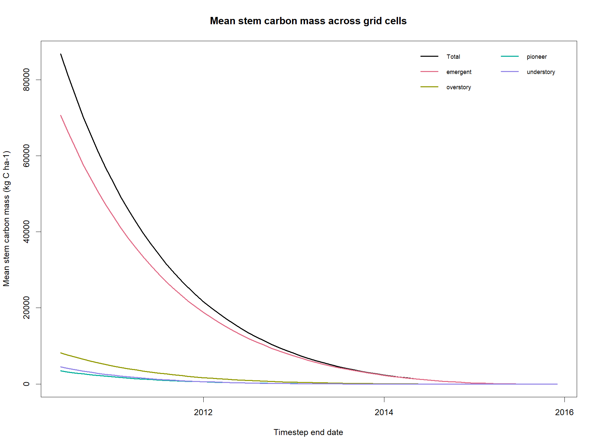
Mean Foliage Mass - from timestep index 4 onwards
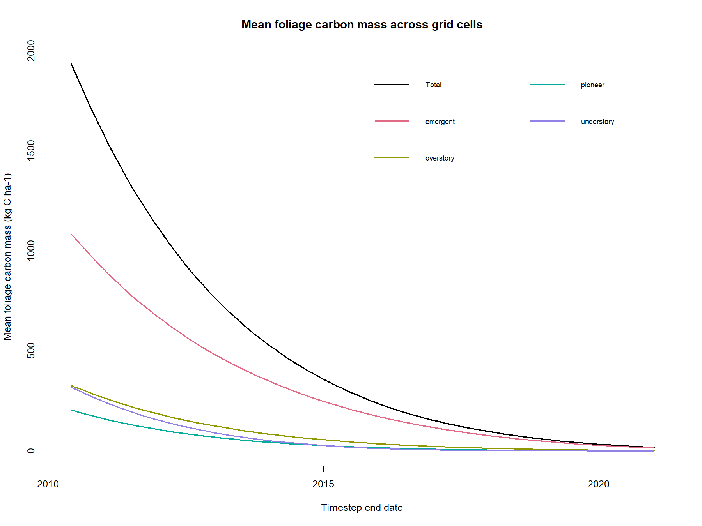
PFT-Specific Cell Trajectories
These diagnostic figures show cell-level masses for every PFT across the full grid. Note that Y-axis is intentionally not standardized across panels to highlight the steep drop in carbon for the emergent PFT (not standardizing Y-axis does make it more difficult to compare across PFTs).
It's interesting to note how little variability across cells there is compared to the variability over time.
Stem PFT trajectories - all timesteps
Each line shows stem carbon mass in one grid cell for the panel's PFT.
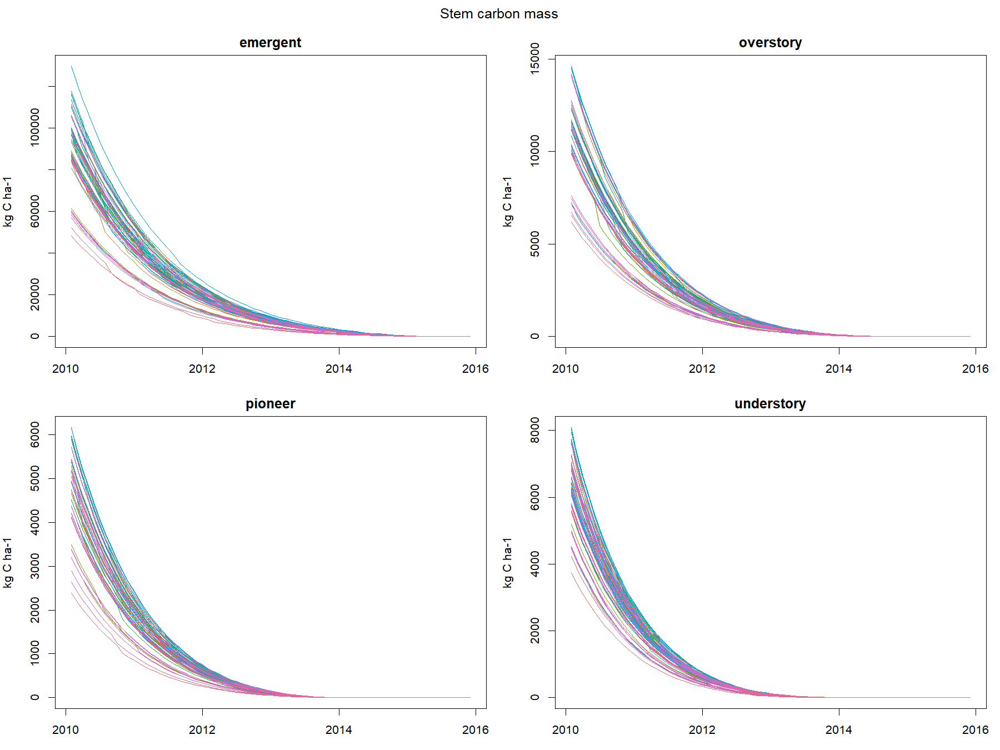
Foliage PFT trajectories - all timesteps
Each line shows foliage carbon mass in one grid cell for the panel's PFT.
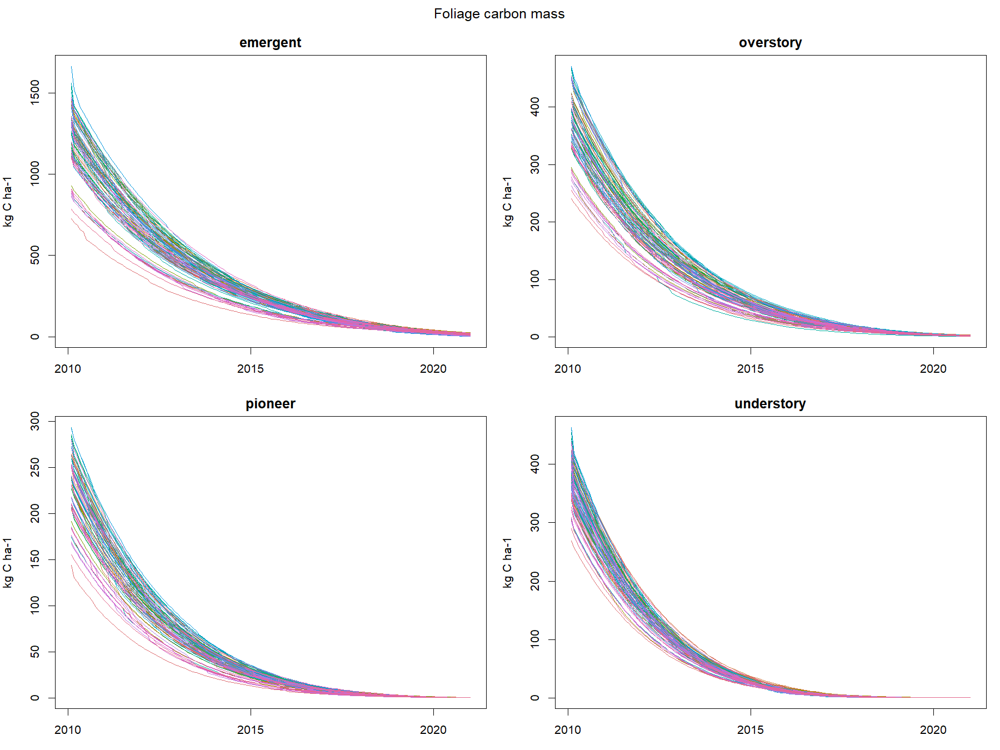
Stem PFT trajectories - from timestep index 4 onwards
Note the steep decline in carbon mass for emergent PFT at both the start and end. Also note the large difference between emergent and understory stem carbon mass.
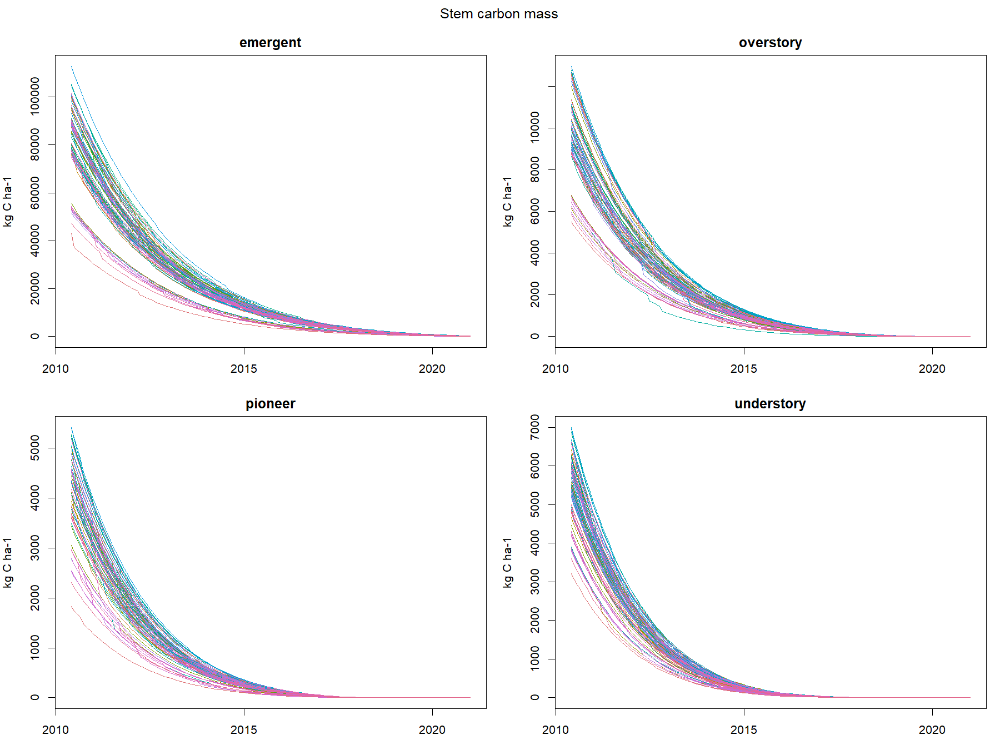
Foliage PFT trajectories - from timestep index 4 onwards
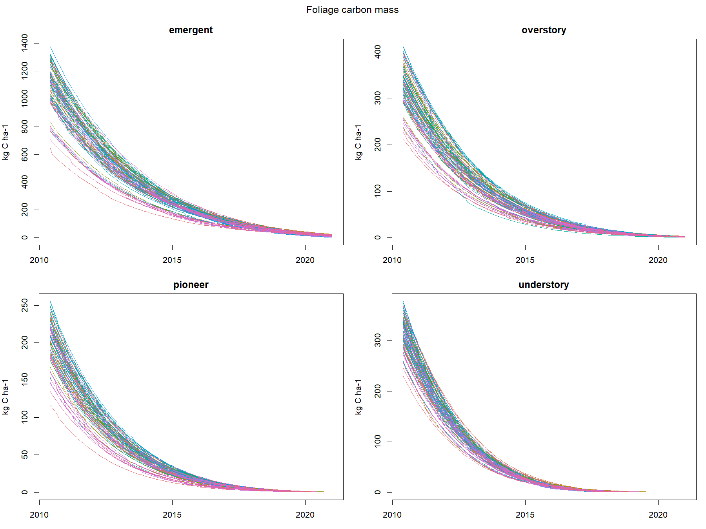
Observed vs Modelled Comparisons
The figures below show full-timestep trajectories only for VE cells that overlap the observed plots. Black circles and triangles mark plot observations from the 2011 and 2014 censuses. Values are in kg C ha-1.
The curves provide time-series context; they are not restricted to census-date timesteps. For the comparison table, each census date is matched to the model timestep interval containing that date. A plot may overlap multiple cells, so its observation is shown once in the figure but repeated across matched cells in the table. Those table rows are not independent replicates.
The Plant validation tracker summarises the matched variables, periods, spatial and temporal extents, and units.
Stem Comparison
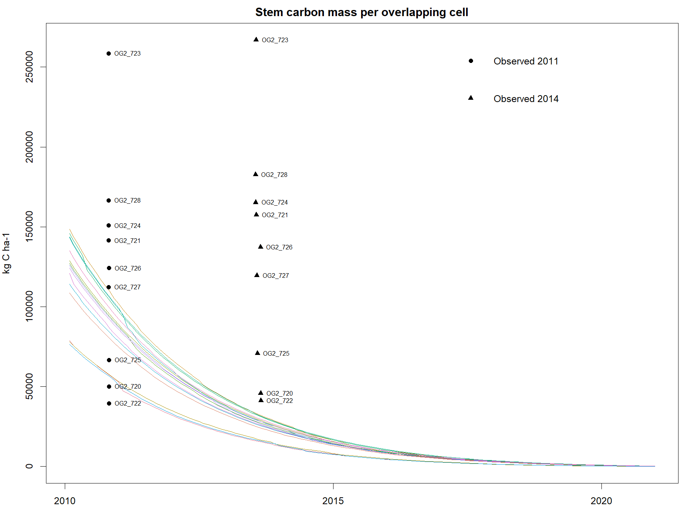
Foliage Comparison
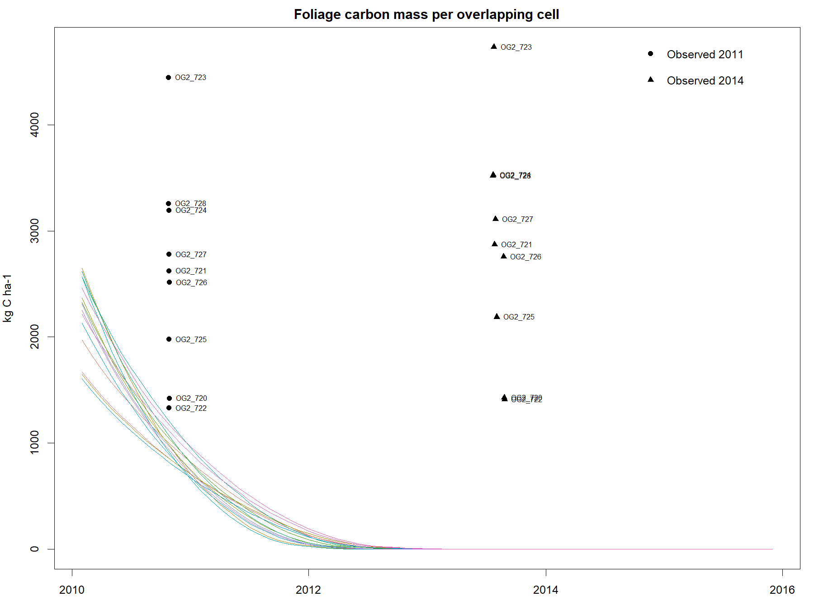
Next steps in the validation process
The next steps in our planned validation process would be to plot observed vs predicted for all the model outputs across models. However, there is room for more targetted validation within models, and even within specific outputs. For example, why/when are predicted outputs different from observed data, what's driving the differences across PFTs, etc.?
Future validation could proceed in two stages. First, apply consistent spatial and temporal matching to a prioritised set of outputs across Virtual Ecosystem models. Then investigate selected discrepancies in greater depth, including their magnitude, timing, early-simulation changes, and variation across cells and PFTs. This staged approach provides broader coverage while reserving detailed analysis for the most informative cases. Patterns across outputs may also reveal shared causes.